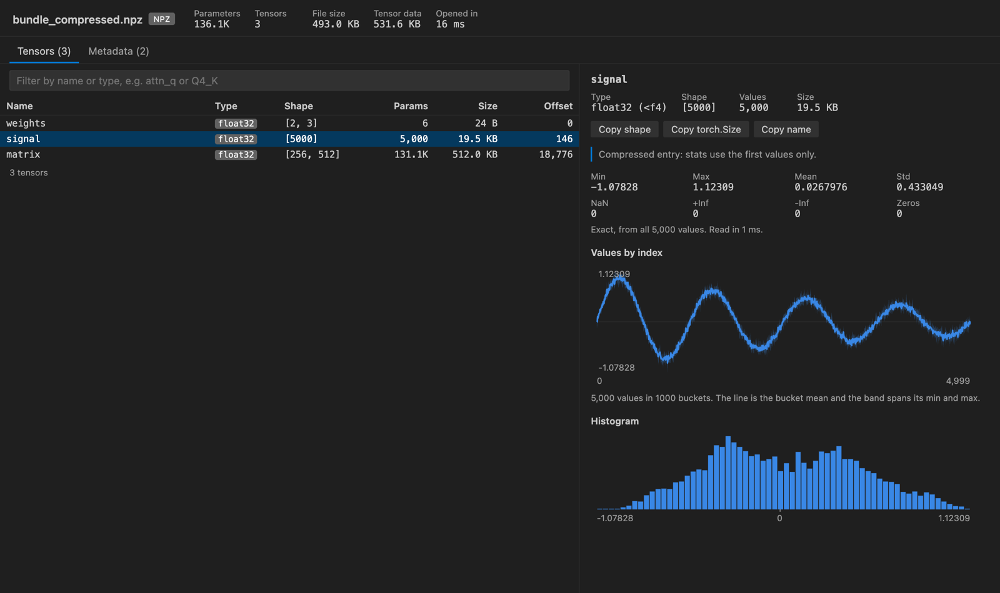

Open files in VS Code and Cursor / Machine learning files
Open a .npz file in VS Code
A .npz file is a zip of .npy arrays, so VS Code shows it as binary. Install the free Tensor Viewer and click the .npz file. Every array in the archive is listed with its name, dtype, shape and size. Click one to see min, max, mean, std, NaN and zero counts, a line plot, heatmap or picture, a histogram and the values. Files from np.savez and np.savez_compressed both open, and Python is not needed.
Free, MIT license. Extension ID zovo.tensor-viewer, version 0.6.5. Needs VS Code 1.90.0 or newer.

Steps in VS Code
- Install Tensor Viewer from the Marketplace, or press Ctrl+P (Cmd+P on macOS) and run
ext install zovo.tensor-viewer. - Click the
.npzfile in the Explorer. The table lists every array in it. - Type in the filter box to find an array by name or type. Click a header to sort.
- Click an array to see its stats, plots and the Values table, 32 rows at a time.
- Use "Save as .npy..." or "Save as CSV..." to pull one array out into its own file.
Steps in Cursor, Windsurf or VSCodium
- Open the Extensions view with Ctrl+Shift+X (Cmd+Shift+X on macOS).
- Search for
zovo.tensor-viewerand click Install. Cursor, Windsurf and VSCodium install from Open VSX, where it is published aszovo/tensor-viewer. - If your editor has no gallery, download the .vsix from the Open VSX page and run "Extensions: Install from VSIX...".
- Then use it the same way as in VS Code.
What Tensor Viewer handles
- Stored and deflated entries, and zip64 for large archives.
- bool, int8 to int64, uint8 to uint64, float16, float32, float64 and complex arrays, in C or Fortran order.
- Image-shaped arrays drawn as pictures, with a frame picker for stacks and batches.
- Reload when the file changes on disk, keeping the selected array.
- Also opens .npy, .safetensors, .gguf and PyTorch .pt, .pth and .ckpt files.
What it does not do
- Compressed entries can only be read from the start, so big arrays in them are sampled from their first rows. The panel says when stats come from the first values only.
- Object arrays saved with
allow_pickle=Trueare listed but not opened in the current version. - Text and structured arrays are listed without stats.
- It is a viewer. It never changes the .npz file.
In JetBrains IDEs (IntelliJ IDEA, PyCharm, WebStorm, CLion and others)
- NetCDF, HDF5 & NumPy Viewer by Zovo. Our JetBrains plugin for PyCharm, IntelliJ IDEA, DataSpell and CLion (2025.2 and later). It lists the arrays of an .npz with shape, dtype and size, with stats, a value table, a heatmap and an image view. It was submitted to JetBrains and was still waiting for their review on 9 November 2026, so the page may not offer an install yet.
- PixelLens (JetBrains). 17,187 downloads. Its listing says: "Free PyCharm image viewer plugin for visualizing and debugging NumPy, OpenCV, PyTorch, TensorFlow, JAX and PIL data." Its listing does not mention opening .npz files.
Other options
- vscode-numpy-viewer (
Percy.vscode-numpy-viewer, 511,948 installs, not on Open VSX). Its own description: "Display (binary) .npy or .npz files in VSCode." The most installed NumPy viewer, with a 5.0 rating. Not on Open VSX, so Cursor and VSCodium cannot install it from their gallery. - vscode-pydata-viewer (
Percy.vscode-pydata-viewer, 126,811 installs, not on Open VSX). Its own description: "Display PyData files (.npz .npy .pkl .pth) in VSCode." - NPZ Viewer (
shenfy.npzview, 7,115 installs, not on Open VSX). Its own description: "View variables, shapes, and dtypes in NumPy .npy and .npz files". - Python and NumPy.
np.load("file.npz").fileslists the arrays, andnp.load(...)["name"]loads one.
Install counts and Open VSX status were checked on 9 November 2026. Descriptions in quotes are the extensions' own.
Questions
What is inside a .npz file?
A zip archive with one .npy file per array, written by np.savez or, compressed, by np.savez_compressed. Tensor Viewer lists each array by the name you gave it.
Can it open compressed npz files?
Yes. Deflated entries open. Because a compressed entry can only be read from the start, very large arrays show their first values, and the panel says so.
Does it work in Cursor or PyCharm?
In Cursor, Windsurf and VSCodium, yes, from Open VSX. For PyCharm, see the JetBrains section on this page.
More about Tensor Viewer
Read the Tensor Viewer page for every feature and setting, or the source code on GitHub.
Related guides
- NPZ & NPY Viewer, PyTorch & Safetensors on the VS Code Marketplace (also on Open VSX). Shows arrays, shapes and values from .npy, .npz, .pth, GGUF and safetensors files.
- View .npy and .npz NumPy files in VS Code
- A safetensors viewer for VS Code
- Compare two PyTorch checkpoints
- Inspect a GGUF model file in VS Code
Zovo Pro and support
Zovo Pro: USD 19 once, every Zovo viewer. It turns on the Pro tools in this extension and in the other Zovo extensions you use. The free features stay free.
After a card payment your license key shows on the next page. Paste it with the command "Zovo Pro: Enter a key".
You can also support the work with no Pro:
Need your format supported?
Open a format request with a sample file, and I reply there whether it can be done. For USD 299 once, through this GitHub Sponsors tier, I add your file format or a missing feature to this extension, with tests, within 7 days.